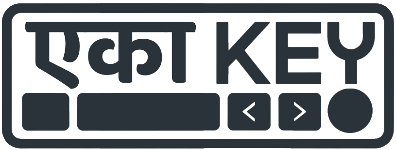

EkaKey: System-Wide Autocorrect
A floating, system-wide typing assistant for Windows. Brings mobile-grade autocorrect, phonetic spelling resolution, dynamic custom trie learning, and visual feedback across any Windows application without lag.
- Low-Level Listening: Uses Win32 C++ hooks to observe keystrokes globally without interception lag.
-
Double Metaphone: Corrects words by phonetic acoustics with
dart_phonetics. - Self-Learning Loop: Undo a correction once, and it learns your personal abbreviations permanently.